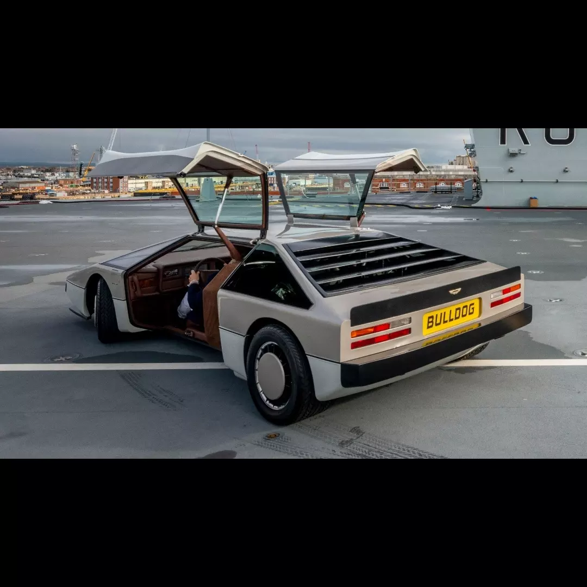
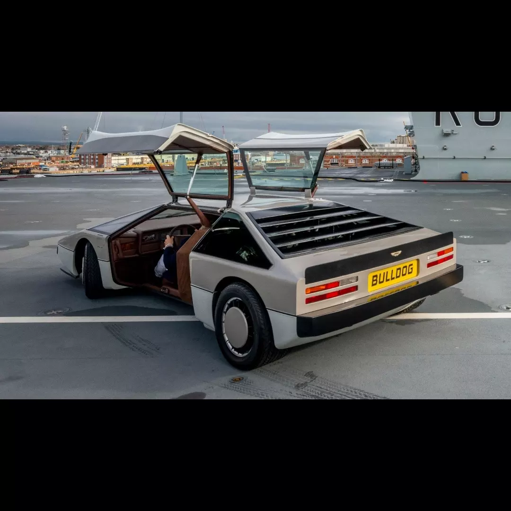
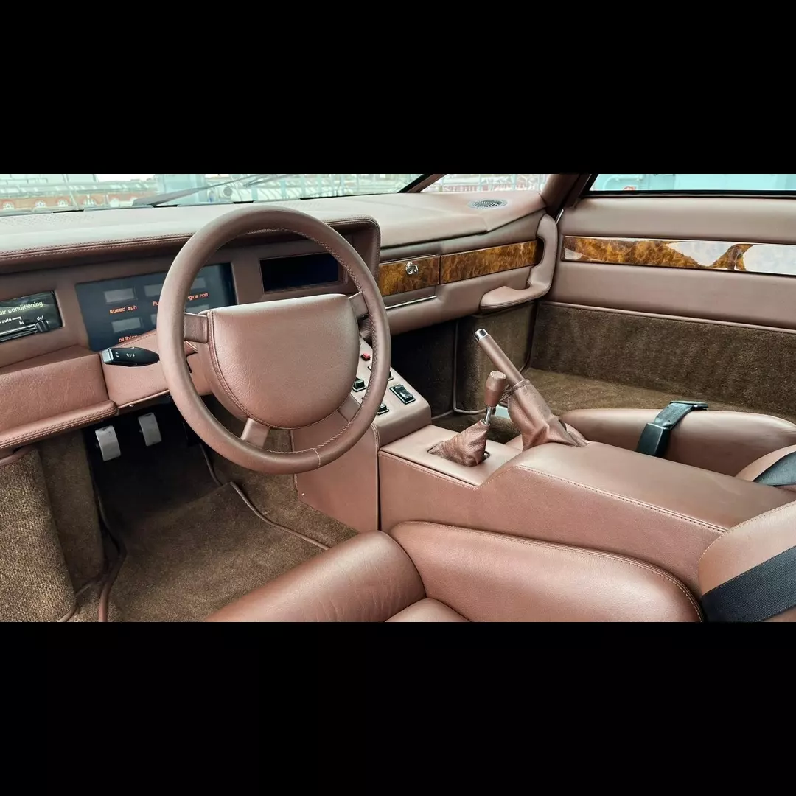

Velocidad máxima: 307km/h
0-100 km/h: 5.1s
Potencia máxima: 600cv
Longitud: ?
Anchura: ?
Altura: 1.1m
Batalla: ?
Peso: 1727kg
El Aston Martin Bulldog es un prototipo de automóvil que fue producido por Aston Martin en 1979, pero no se presentó oficialmente hasta el 27 de marzo de 1980. En un principio, su producción se había limitado a 25 unidades, aunque finalmente, tras cancelarse el proyecto, solo se llegó a fabricar uno. El nombre clave del proyecto fue DP K9 nombrado por el doctor Who. Este automóvil fue fabricado en Reino Unido, pero tenía el volante a la izquierda (al contrario de lo que suele ser habitual en dicho país). El Bulldog era propulsado por un motor V8 biturbo de 5.3 litros fabricado por Aston Martin con más de 600 CV (la cifra exacta no está confirmada) y un par de 677 Nm. Alcanzaba una velocidad verificada de 307 km/h, aunque la velocidad máxima teórica se estimó en 381 km/h, y aceleraba de 0 a 100 km/h en 5,10 segundos. El modelo medía 1,1 metros de alto y pesaba unos 1727 kg, además montaba una caja de cambios manual de cinco velocidades y el depósito de combustible tenía una capacidad de 113 litros. Disponía de puertas de ala de gaviota y faros ocultos, el interior usaba instrumentación digital, y para la vista posterior, en vez de retrovisor, se instaló en la consola central una pantalla conectada a una cámara trasera. Después de que se cancelara su producción, la única unidad fabricada fue subastada por un precio aproximado de £130.000.
